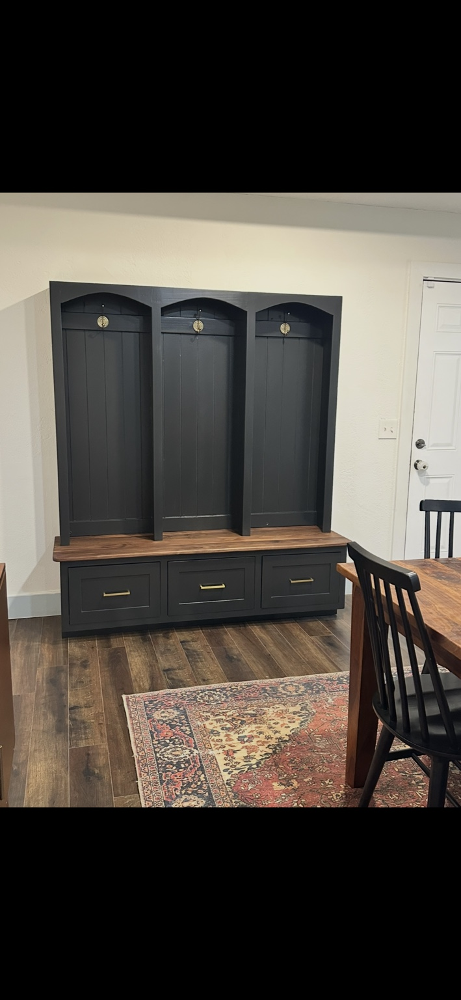
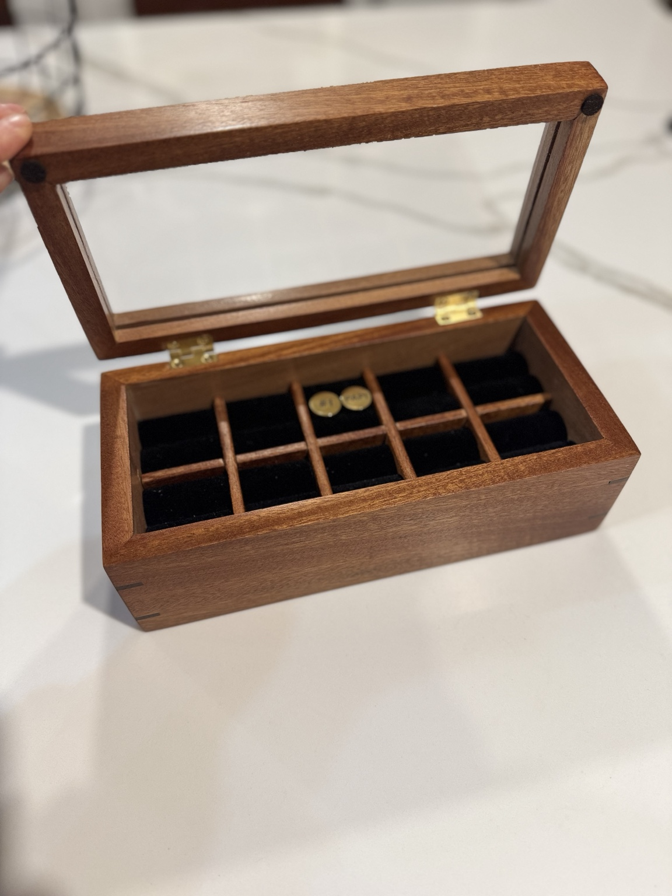

A place to land.
A hall tree with coat hooks, a wooden seat, and drawer storage.
A full-time job. A family. A garage workshop. Follow along as I build a better space, learn through the problems, and make room for the work I want to do.
Explore the projects ↗Follow on YouTube ↗
A hall tree with coat hooks, a wooden seat, and drawer storage.

A divided keepsake box, with a transparent lid and contrasting corner splines.
The shop rebuild
Building the hero wall: lower cabinets, upper storage, and a walnut tool wall. A place for the tools, and room to get to work.
Planned build
A mobile workbench and outfeed table, designed around a working garage and the tools I already own.
The next chapter
The goal behind the shop: making space and time to build furniture. More projects will live here as that journey unfolds.
Wood & Working is my record of figuring it out: the decisions, the mistakes, and the fixes that move a project forward. If you’re making time for your own workshop, you’re in good company.